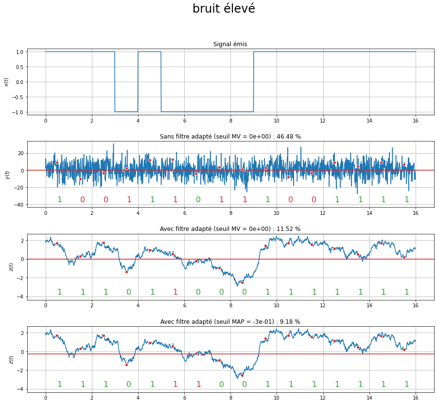
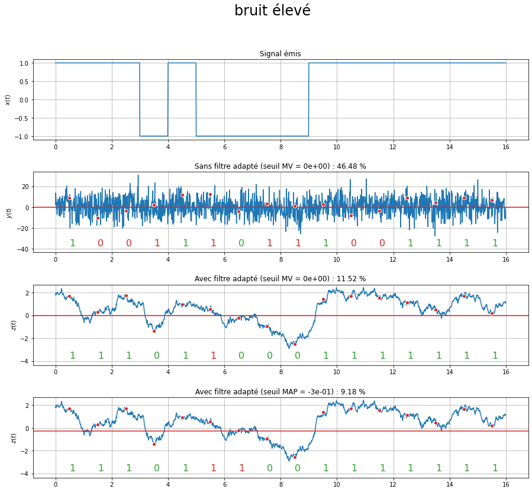

Transmission en bande de base sur un canal idéal¶
On rappelle qu’un canal est dit idéal si sa largeur de bande est infinie : sa réponse impulsionnelle est alors \(g(t)=K\,\delta(t-\tau)\) où \(K\) et \(\tau\) sont l’atténuation et le retard du signal reçu (sans perdre en généralité, on pourra prendre \(K=1\) et \(\tau=0\)).
Le signal reçu a pour expression :
soit, en considérant \(K=1\) et \(\tau=0\) :
Les graphiques ci-dessous représentent, pour deux niveaux de bruit, les différents signaux :
le premier graphe correspond au signal émis \(x(t)\) ;
le deuxième graphe correspond au signal \(z(t)\) sans filtre de réception (\(r(t)=\delta(t)\), donc finalement : \(z(t)=y(t)\)) et un seuil fixé à 0 ;
le troisième graphe correspond au signal \(z(t)\) avec filtre de réception et un seuil fixé à 0;
le quatrième graphe correspond au signal \(z(t)\) avec filtre de réception et un seuil dit au sens du « maximum a posteriori » ;
Sur chaque graphe, les points rouges correspondent aux instants d’échantillonnage du signal, et permettent de définir la séquence binaire reçue. Ces points sont comparés au seuil représenté par la ligne rouge.
 

Le filtre de réception \(r(t)\) est un filtre adapté car on cherche à détecter les formes d’onde \(h(t)\) dans le signal bruité \(y(t)\). Ainsi, \(r(t) = h(-t)\). La forme d’onde \(h\) étant une porte de durée \(d\), le filtre de réception est également une porte de durée \(d\), que l’on peut générer ainsi :
r = np.ones(L)/L
La variable r est un signal constant.
Comme il s’agit ici d’une simulation, ce signal est numérique et contient 100 échantillons, lesquels sont d’amplitude 1/100.
Pour chaque niveau de bruit et chaque procédure de réception, le taux d’erreur, exprimé en pourcentage, est indiqué. On constate tout d’abord que le filtre de réception joue un rôle très important et permet de réduire drastiquement le niveau de bruit dans les signaux, et donc de réduire le nombre d’erreurs. Par ailleurs, l’utilisation du seuil au sens du maximum a posteriori, qui est défini en fonction de l’amplitude des formes d’onde mais également du nombre attendu de bits à 0 et à 1, permet de réduire encore un peu les erreurs, dans le cas où, comme dans cet exemple, les symboles ne sont pas équiprobables.